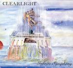

Home Artist links Label link

Clearlight - Infinite Symphony
| Artist: | Clearlight |
| Title: | Infinite Symphony |
| Label: | Clearlight Music CLM-008 |
| Length(s): | 66 minutes |
| Year(s) of release: | 2003 |
| Month of review: | [10/2005] |
Line up
Cyrille Verdeaux - piano, keyboards
Peter McCarthy - guitars
Dan Shapira - basses
Shaun Guerin - drums, percussion, vocals
Didier Malherbe - sax, doudouk, flute
Trevor Lloyd - electric violin
Hom Nath - tabla
Gene Stopp - moog modular system 10
Cory Wright - tenor sax
Richard Hardy - soprano and tenor sax, flute, tin whistle
John Thomas - guitars
Matt Brown - vocals
Jim Wright - warr guitar
Tracks
| 1) | Movement I | 10.57
|
| 2) | Movement II | 8.40
|
| 3) | Movement III | 12.27
|
| 4) | Movement IV | 8.45
|
| 5) | Movement V | 10.55
|
| 6) | Movement VI | 9.17
|
| 7) | Movement III (Edit) | 5.46
|
Summary
Clearlight aka Cyrille Verdeaux has been making lush symphonic rock
since the seventies. After a hiatus he got back to work a few years ago,
reissued his records and recorded new material as well. The cover
of this one is by Paul Whitehead (yeh, the Foxtrot cover). Other familiar
names are Didier Malherge of Gong (in which Verdeaux also played at some
point) and the album also features the now deceased Shaun Guerin.
The music
The album is a symphony in six movements, with a radio edit of part
III added as a bonus. The first of these movements opens with an overture,
with percussive piano and tense violin. The theme is a memorable one, and
the bass line runs high. The melody reminds me strongly of a song on the
Alan Parsons Project debut disc, Dr Tarr And Professor Feather I think.
A few minutes into the song, the music becomes a steady flow, nothing
very recognizable happening, the music is just happening. The leading
instrument is the violin, played in fashion similar to Stuart Gordon with
Peter Hammill. The percussion is very steady. Then the music speeds up a bit
with the melodies taking for the Arabic and a jazzy guitar setting in.
The guitar gains in force, later the violin and the sax, I think, come back
in, driving away the guitar. As such the song meanders until the end.
Notwithstanding, the music is not plain noodling: the
transitions do make sense.
Movement two, is a lot of more relaxed, with warm flute from Malherbe,
and a general soft jazz atmosphere with a bit of soft EM thrown in.
Then the guitar sets in, in a somewhat rhythmic fashion. Elements of Steve
Howe here, but it also sounds very seventies and jazzy. At one third,
the music becomes a bit more powerful, with strong phrasings on guitar.
The sax is the lead instrument from then on, and the themes keep on going
strong, beneath the meandering sax. At two thirds, the band goes in overdrive
with wild keyboard run, very threatening. The next part with runs of piano
runs into the APP like melody again. A powerful close results.
Movement three opens with a heavy chord, but then it is all quiet. The music
sets back in with the vocals. The vocals are low ones, and a bit sinister,
somewhat like Pal Sovik of Fruitcake, but also with elements of Genesis era
Gabriel. The vocal melody is punctuated by the percussive piano and ligned by
the wailings of the sax. The Gabriel feel gets stronger when the music
and the vocals gain power. This is indeed excellent material with the ghost
of Genesis wandering around, also in the music. However, the music sounds
more determinedly classical. Past halfway a certain manicness creeps into
the music. The final minutes are more in the vein of Mike Oldfield, with
a bit Tubular Bells like structured melody. A second bunch of vocals
can be found at the end (my first impression was that these were for a future
song). Both in length and result the central piece on this album. Very good.
With Movement IV we come back to more relaxed, melodic waters. The themes
are memorable ones again, played by the flute this time. And hey there
is the violin too. The violin often has a very vibrant sound. The bouncy
tune also features acoustic guitar this time around, making for a somewhat
folky outcome. At one third, the pace is upped, and the electric guitars
makes its entree. Past halfway, the guitar goes into overdrive and thus
builds up the tension.
Part five is more classically structured than most. It is also a bit static
by comparison. Some tension creeps in past halfway, a bit in the vein
of the movie soundtracks of say Danny Elfman. The sounds on this latter
half can be kind of eerie and harsh on the ears.
The final part of is again very classically structured, with a bit
of a mysterious edge to it, because of the violin and the piano.
The theme of the opening recurs here.
The conclusion is a special radio edit of movement number three, indeed
the most suitable for the pop/rock/prog radio station. But why did they not
include the vocal parts?!?
Conclusion
The name Infinity Symphony is not a misnomer, especially the last part
of the title, since the symphony does only take a finite amount of time.
Within its genre, that of classically oriented prog this is an excellent
piece of work with elements of jazz and folk thrown in for good measure, but
never as an excuse to get away with less than memorable themes. The central
part is the vocal third movement, in which the vocals of Guerin shine
in a very Gabriel kinda way; more reason to miss him. Verdeaux is an
excellent composer, because notwithstanding the lengthiness of the
usually instrumental songs, there is never a dull moment. He also did
not forget to put in sense of urgency and tension, by stepping up the
power once in a while (but again not overly much), and the themes
are very good. If you look at the cover
and expect a New Age album of some kind, progger be aware! There is much
more to this album than that. Fans of Oldfield, Enid, Ant
Phillips and early Alan Parsons Project (the debut) will certainly want to have
this (if they still need admonition), but the appeal of Clearlight should not be restricted to those alone: fans of Genesis, are we not all,
can do themselves a favour by listening to Movement III and then do the
musician a favour and get the album. Finally, I think Clearlight can also
be favourable looked upon by fans of the electronic music genre.
© Jurriaan Hage